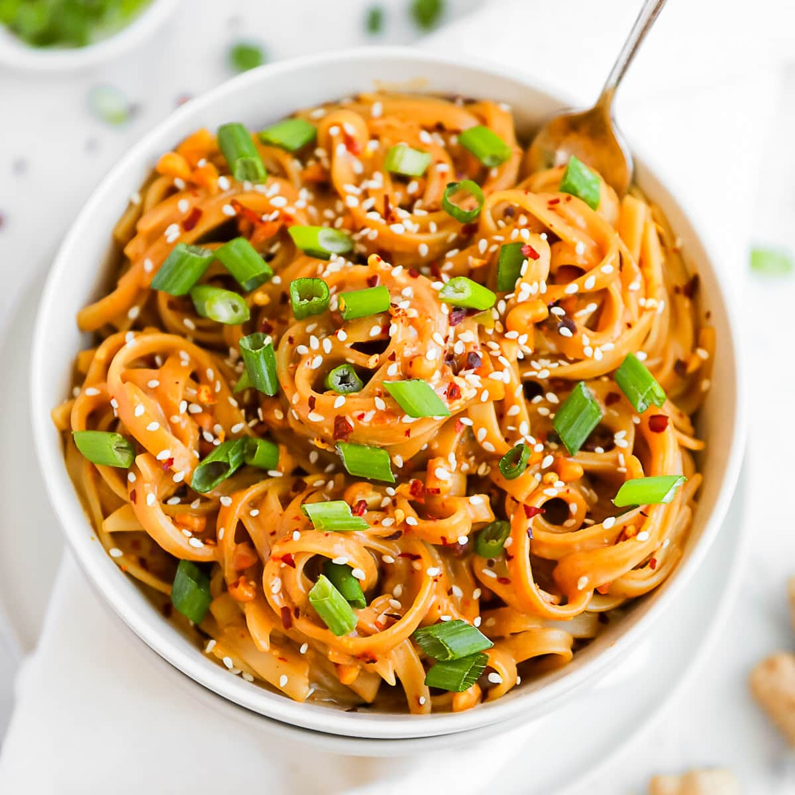

Homepage
Peanut Noodles

Description
My personal opinion: this has opportunity to be the top dish. Still needs to be tested.
Ingredients
- Noodles
- Peanut Butter
- Soy Sauce
- Rice vinegar
- Sugar
- Toasted Sesame Oil
- Chili Garlic Sauce
- Garlic Clove
- Spring onion
Steps
- Cook the udon noodles in boiling water according to the package instructions. Drain the water and return the noodles to the pot. Set aside.
- In a small bowl, whisk the peanut butter, garlic, soy sauce, vinegar, sugar, sesame oil, and chili garlic sauce together until a thick paste forms. Add some of the hot water, then whisk again until smooth.
- Pour the peanut sauce over the noodles and toss until they’re well coated.
- Serve the warm peanut noodles in bowls and garnish with your favorite toppings. Enjoy!